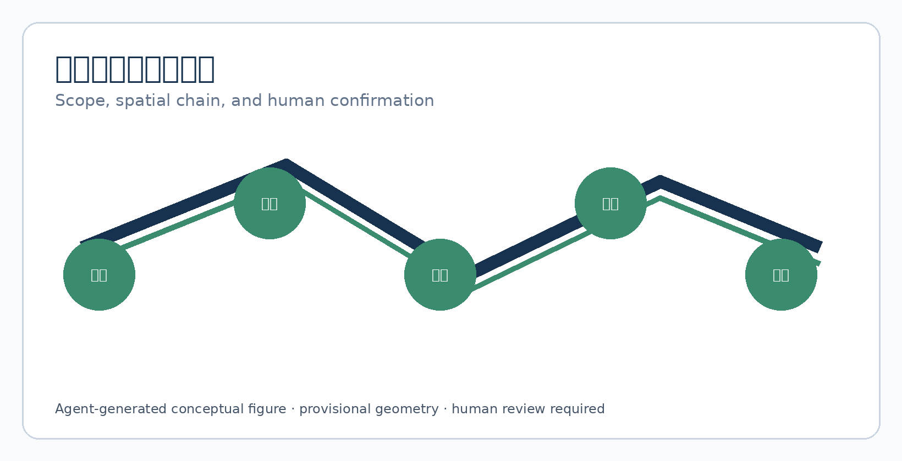
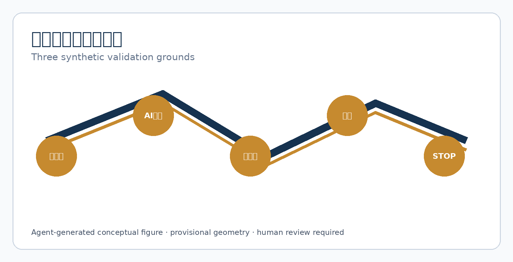

京张原意双轨 / JINGZHANG ORIGINAL INTENT DUAL TRACK
让机器翻译成为可撤的草稿轨，让人的原意、确认和拒绝始终保留在公共服务空间。
京张原意双轨 / JINGZHANG ORIGINAL INTENT DUAL TRACK
机器先译，原意并行；本人确认后才发送，任何失败都回到人工、纸面和原文。
边界声明：这是使用临时粗略边界的概念参考方案，不是批准的翻译服务、法律解释、医疗意见或政府实施承诺。所有真实部署须经专业团队、语言社群、无障碍专家和受影响者共创。
设计依据与资料清单
方案依据官方公告、智能体任务书、公共来源登记、专业标准本地快照和临时几何。它们支撑征集目标、三层范围与交付要求，不授权具体地块、服务流程或翻译质量承诺。来源 来源 深度
临时边界仅用于生成、可视化和拓扑自检；正式 polygon 到位后重算全部图层和面积。来源 空间数据

三层范围工作框架
统筹研究范围连接语言服务、AI产业、文化传播和权利保障；总体设计范围布置“双轨译写站”、安静确认桌、无障碍入口和人工服务后备；三处重点区分别进行合成对话演练，不承载真实个案。空间数据 指标 深度
空间最小链是“原文入口—机器草稿轨—人工/本人确认—并行原文留存—可撤发送—失败转人工”。翻译节点和普通咨询、社区服务共用入口，避免把语言差异变成可识别标签。

统筹研究范围产业与未来城市研究
原意双轨不是“自动翻译器”，而是一种公共沟通基础设施：上游是术语库、语言社群、原文输入和无障碍表达；中游是本地草稿、双人复核、版本差异和人工决定；下游是发送、撤回、申诉和退出。五个案例透镜比较口译确认、易读文本、法律术语锁定、人工复核和供应商退出，不把外地制度当作本地事实。指标 来源
区域协作只作为待核接口：社区提供日常语言测试，科学城提供人因方法，经开区提供端侧工具退出测试，京津冀节点比较跨地术语版本；没有证据时不宣称合作。标准
总体设计范围城市更新与控规深度城市设计
总体结构是一条双轨沟通主线、三个合成验证场和两翼专业支撑。近期只做无真实个案的 1:1 原型、术语共创和可读性测试；消防、权属、隐私、劳动和无障碍条件未确认时保持普通人工服务。空间数据 深度 标准
用地、建筑、道路、绿地和公共空间只表达邻接关系；容积率、高度、红线和容量均待正式控规资料补齐。
设计意图是把语言权利放进日常公共空间，而不是把不会使用标准普通话的人送进一条孤立的“翻译通道”。land_use.geojson 以普通服务、双轨原型、社区支撑和公园邻接组成连续拓扑，public_space.geojson 记录原文台、确认轨和版本灯的可移动组件，metrics.json 只复算提交边界内的面积和概念计数。它们证明空间链能被阅读和重算，不证明任何房间已经存在、可取得或满足声学、消防和隐私标准。正式深化须补充房间净尺寸、语言可达性、视线、排队、无障碍、权属、疏散、值班与记录制度；在这些资料缺失时，设计结论保持“待正式数据补齐”，不升级为控规、工程或服务承诺。空间数据 指标 深度
重点区域详细设计
众智园 VERIFY 演练专业术语、模型版本和“原文不可改写”规则；北京 AI 原点社区 CO-DESIGN 演练居民、师生和新来者的易读表达、手语/字幕与本人确认；大钟寺 REHEARSE 演练轨道到达、多语言导视、断网、无工作人员和供应商退出。空间数据 指标 深度
每个场地的验收不是 BLEU 或识别率，而是本人能否看到原文与草稿差异、选择“不发送”、获得人工解释，并在失败时继续使用原文和纸面服务。

AI 创新生态、人才画像与 AI+ 场景
agent.1—agent.6 的专属成果分别是命名/视觉系统、五案例生态图、十张场景卡与三项产业测试、六类 persona、三个公共地标、铁路—中关村—AI文化叙事和年度退出运营。标准 指标 指标
六类 persona 为：低识字使用者、需要手语/字幕者、跨境访客、老年居民、前线服务人员、负责确认的翻译/专业人员；它们是设计提示，不是个人画像。
十张场景卡为：公共资源预览、双语路线、医疗预约草稿、法律术语锁定、儿童易读说明、手语字幕、居民意见原文、跨机构表单、断网纸面、版本撤回。AI 只做可见草稿和差异标注，不自动发送、诊断、改写事实或推断身份。指标
agent.1｜品牌、总体概念与协同回路
中文名“京张原意双轨”、英文名 JINGZHANG ORIGINAL INTENT DUAL TRACK 强调两条并行轨：机器草稿与本人原文。Logo 由一条铁轨、一条未闭合的人工确认线和一个可撤节点组成；主色为铁路蓝 #16324F、确认绿 #3B8C6E、原文金 #C68A2F。三大定位、五大功能和三区两翼以“原文—草稿—确认—发送—撤回”闭环连接。标准 深度
agent.2｜五案例透镜、要素与三项产业验证
C1 术语锁定、C2 原文留存、C3 双人确认、C4 无障碍等价、C5 供应商退出构成五个机制透镜。T1 检查医疗/法律草稿的禁止改写，T2 检查共享终端和跨机构表单的原文泄露，T3 检查断网、错译和无人接班时的纸面后备；任一原意丢失即 STOP。指标 来源
agent.3｜六类 persona、十场景与运营阈值
每张卡记录服务对象、空间、人工决定、AI 禁止角色和失败结果。合成成功阈值为十张卡均保留原文、每次发送都有具名确认、撤回后不继续传播；该阈值不外推真实翻译质量。指标 指标
agent.4｜公共空间、三个地标与组件库
“原文台”并排显示原文与草稿；“确认轨”显示谁可以确认、撤回和解释；“版本灯”只显示当前版本，不显示个人语言或内容。六组件为双轨门牌、差异卡、术语锁、人工确认牌、纸面后备盒和撤回清单。指标 空间数据
agent.5｜文化叙事、导视与国际文案
京张铁路的双轨与人工值守被转译为“机器可以先走，人始终保留原线”；中关村开放协作转译为可审计术语和公开差异；AI 新文化强调不替人发言。国际文案为 Two tracks. One human intent.，不声称官方翻译或法律保证。来源 深度
agent.6｜年度活动、开发者社区与长期退出
季度开展合成错译压力测试，半年由语言社群和前线人员共审，年度发布清权术语包与退出案例。G0 资料/权利、G1 空间/无障碍、G2 隐私/法律、G3 人工确认、G4 撤回/复核五门任一 HOLD 即停止。指标 深度
用地、建筑规模与拆改留方案
四个连续分区表达普通服务、双轨原型、社区支撑和京张公园邻接。建筑足迹是可移动原型包络，不是现状或建设量；容积率、高度、消防、权属和拆改留待正式条件。优先利用普通房间，条件不明不改、不建、不接入真实数据。指标 空间数据 深度
设计判断是“先借用普通空间，再讨论专门设施”：原文台和确认轨可以通过可拆家具、纸面盒和低技术门牌表达，不应形成会标记语言、国籍或身份的固定建筑。建筑基底指标仅来自 provisional 几何的多边形面积，不能倒推出建筑量、容积率、租赁权或改造成本；拆改留分类只提出核查顺序——权利与现状、无障碍与消防、声学与视线、劳动和数据责任。若任一项不明，保持普通人工服务、撤掉机器草稿屏、不接真实数据。正式 polygon 和现状调查到位后，应重新计算建筑基底、公共空间比例、可达路径和分期面积，并由专业建筑、消防和语言服务人员逐项签字。指标 空间数据 深度
交通、轨道、市政与公共服务设施
道路层是到达关系，不是道路红线。无手机、无账号和使用辅助沟通的人均可到达人工确认桌；AI 轨可拔除，纸面和电话后备不能被阻断。轨道、消防、停车、夜间照明和市政容量待专业复核。空间数据 深度 标准
交通设计意图是让“到达确认”不依赖手机、账号或单一语言：从轨道和慢行入口到原文台，至少保留清晰的普通导视、可坐等候、轮椅转弯、人工问路、电话和纸面后备。roads.geojson 只表达概念路径，不能支撑道路红线、站城一体化工程或消防救援距离；green_space.geojson 与 public_space.geojson 只检验公共路径是否连续。容量、照明、夜间安全、轨道接口、停车、雨雪和应急疏散均是待补的工程条件。正式深化需要交通、无障碍、消防、市政、运营排班和语言社群共同演练，任何 AI 轨中断都必须在同一空间恢复人工和原文服务。空间数据 指标 深度

蓝绿空间、公共空间与城市风貌
蓝绿慢行是普通可达路径，不显示个人语言、内容或去向。三个概念地标为“原文台”“确认轨”“版本灯”；荣誉展示只公开清权术语贡献和失败修复。空间数据 空间数据 深度
蓝绿空间的设计意图是把双轨沟通放入日常散步、等候和社区交往，而非制造一处可被标签化的“特殊服务点”。绿地和公共空间比例是 provisional 拓扑的低置信复算，只用于比较路径连续性和节点分布；不发布语言、人次、内容或个人路线统计。原文台、确认轨和版本灯应采用可移动、可撤、无摄像头的组件，城市层导视只传达“可获得人工解释”，不显示语言或服务类别。正式资料需补充文保、河道、绿地、照明、无障碍和夜间运营条件，并由受影响语言社群检验“普通入口”是否真的可发现、可拒绝和可退出。空间数据 指标 深度
更新项目清单、实施政策与分期计划
JZ-01 术语与权利盘点；JZ-02 无真实个案 1:1 原型；JZ-03 三项合成测试；JZ-04 语言社群、无障碍、法律和劳动复核；JZ-05 有界展示；JZ-06 任何阶段可撤回并恢复普通人工服务。空间数据 深度 指标
分期意图是先解决权利和证据，再决定是否需要空间改造：第一阶段只清点术语、来源、授权、人工角色和失败结果；第二阶段用合成文本做 1:1 草稿—确认—撤回演练；第三阶段由语言社群、无障碍、法律、隐私、消防和劳动专家共同复核；只有所有 HOLD 关闭，才可讨论非真实个案展示。phasing.geojson 表达的是概念范围而非施工界面，五门数量是审查清单而非批准门槛；权属、预算、排班、设备采购、维护和责任主体均待专业确认。任何阶段发生原意丢失、自动发送、无人工接班或版权不清，都执行 JZ-06，停用智能层、保留原文和纸面服务，并记录退出原因以便复核。空间数据 指标 深度
指标体系、面积复算与合规矩阵
空间指标从 GeoJSON 复算；概念指标为五透镜、三测试、十场景、六 persona、三地标和五门；合成目标为“零自动发送、零原意丢失、每次发送有人工确认”。这些不是城市现状或绩效承诺。指标 深度 指标
指标分成三层：site area、建筑基底、绿地和公共空间比例由 GeoJSON 在指定坐标系复算；五案例、三测试、十场景、六 persona、三地标和五门是可审计的设计覆盖计数；“零自动发送、零原意丢失、每次发送有人工确认”只属于合成目标。每个数值都保留来源文件、公式、置信度和 provisional 限制，不能转写为城市现状、翻译准确率、真实需求或安全绩效。compliance_matrix.json 逐条绑定公告和 agent.1—agent.6 到章节、图层、图纸、来源、假设和自检；官方边界、术语版本或法律程序变化时，先更新证据，再同时重算 metrics、图件、HTML、PDF 和矩阵，避免双语版本或指标漂移。指标 指标 深度

风险、版权与合规说明
风险包括错译、术语漂移、自动发送、共享终端泄露、未授权训练、无障碍缺失、人工过载和供应商退出。控制包括原文并行、差异可见、具名确认、纸面后备、版本撤回、排班上限和受影响者共创。所有文本、图件、HTML/PDF 和结构化设计由本 agent 生成；不含真实个人、地址、对话或未清权品牌。来源 深度 标准
风险控制的核心是把 AI 降为可撤草稿：它不能替人选择语义、改写法律/医疗事实、自动发出表单或推断身份。原文与草稿必须并排可读，差异由人工解释，发送前有具名确认，撤回后不继续传播；断网、错译、无障碍失败、无人接班和供应商退出都返回纸面、电话和普通人工服务。字体、图件、PDF、HTML 和组件均由本 agent 生成，使用可再分发的本地字体和公开/清权仓库资料，不含个人数据或未授权品牌。临时边界、控规、权属、文保、消防、术语版权和真实运营责任仍待确认；不满足任一条件时保持概念状态并触发退出。来源 空间数据 深度
参考资料
完整出处、许可、限制、矩阵和假设见 sources.json、standard_matrix.json、design_depth_matrix.json、assumptions.json 和 report/copyright_statement.md。来源 来源
这些资料分别承担不同责任：官方公告支撑征集目标和三层范围；智能体任务书支撑六项 agent 交付；source registry 约束公开、背景和 provisional 用途；标准快照只建立待核专业问题；提交 GeoJSON 只支撑本包拓扑和概念空间关系。任何外部语言数据、术语表、字体、图像或法律解释都必须先登记发布者、日期、许可、转换和限制；不能核验的材料保持待正式数据补齐，不进入正式结论。来源 来源 深度
临时边界不能支撑红线、精确面积、权属或工程结论。官方 polygon、控规、语言社群反馈或法律程序变化时，先登记来源和限制，再重算 GeoJSON、metrics、图件、HTML 与 PDF。